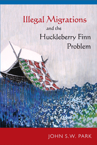

If you knew a runaway slave or undocumented immigrant, would you tell?
If you knew a runaway slave or undocumented immigrant, would you tell?


 If you knew a runaway slave or undocumented immigrant, would you tell?
If you knew a runaway slave or undocumented immigrant, would you tell?

|  |
Illegal Migrations and the Huckleberry Finn ProblemJohn S.W. Parkpaper EAN: 978-1-43991-047-4 (ISBN: 1-4399-1047-2) |
Outstanding Academic Title, Choice, 2014
"A brilliant and refreshing new look at the immigration debate! Park’s weaving of the history of laws governing illegal status challenges any notions of ‘today’s immigrants’ trying to jump ahead of the line or unwilling to act like previous immigrants seeking to be U.S. citizens. Starting off with the question, ‘would you tell?’ and building the narrative around Twain’s novel, Park’s accessible and beautifully written book brings the immigration debate to a personal level. Illegal Migrations and the Huckleberry Finn Problem allows a discussion of immigration that ties together our past and our contemporary debates about civil and human rights."
—Mary Romero, Professor of Justice and Social Inquiry at Arizona State University, and author of The Maid’s Daughter: Living Inside and Outside the American Dream
Throughout American history, citizens have encountered people who are "illegal"—that is, people who have no legal right to be in the United States or to freedom of movement because of their immigration status or race. Like Mark Twain's Huckleberry Finn, these citizens face the conflict between sympathy for the unlawful other and the force of the law.
In Illegal Migrations and the Huckleberry Finn Problem, John Park explores problems of status and illegality in American law and society by examining on-going themes in American legal history, comparative ethnic studies, and American literature. He observes that in reconsidering racially discriminatory laws, Americans have celebrated persons who were "out of status," as well as the citizens who had helped them avoid American law. Similarly, in confronting illegal immigrants in our own time, many Americans have chosen to ignore or to violate federal laws in favor of assisting such persons. In light of these experiences, Park insists that the U.S. ought to rethink policies that have criminalized millions of immigrants, as the injustice of such rules has encouraged people to disobey the law, thereby undermining broader commitments to principles of equality and to the rule of law itself.
Excerpt available at www.temple.edu/tempress
"The novel twist to this book—which I have not seen in any of the voluminous scholarly and other discussion of the modern problems of the U.S. immigration laws—is to use Mark Twain’s Adventures of Huckleberry Finn to illustrate the similarities between the current status of undocumented immigrants in the United States and fugitive slaves in ante-bellum America. I think that the thesis and parallels between the status of the two communities of color affected by the relevant laws are forceful, accurate, thoughtful, and full of insights, and Park’s detail is impressive."
—Kevin Johnson, Dean, Mabie-Apallas Professor of Public Interest Law and Professor of Chicana/o Studies at University of California, Davis, School of Law, and author of The “Huddled Masses” Myth: Immigration and Civil Rights (Temple)
"Park proposes a unique and innovative way to approach the quagmire of immigration reform. He uses the framework that Mark Twain used when presenting the dilemma of what is the proper response to a runaway slave and a young abandoned boy. It is Park's contention that there is much to be learned from comparing the current problems of illegal immigrants with those of fugitive slaves in antebellum America.... He finds interesting linkages between the past mistreatment of people of color and what is happening today. The author pays some attention to the legal, educational, moral, and labor repercussions of the treatment of 'illegals.' Park's work is timely, well written, and extensively documented. It should find a wide audience among academics and the general population. Summing Up: Recommended."
—Choice
"Park takes an interesting approach to the topic of undocumented migration by juxtaposing it with the famous American novel. While this provides a unique hook for his investigation of how illegal migrants fit into American law, its ultimate utility is in exposing the American tradition of creating heroes out of people who overtly broke U.S. law, using examples like Harriet Tubman. This question of making a right decision or obeying the law is what makes Park’s book successful.... Park’s work does a wonderful job of showing how immigration policies have large and obvious unintended consequences. But as Park shows, if people put a human face on the problem, then policymakers could fix these unintended consequences."
—Journal of American Ethnic History
Part I: Status And Illegality In American Public Law And Culture
1. The Huckleberry Finn Problem
2. Race, Law, and Personhood in Huckleberry Finn
Part II: The Company Of Others
3. Slavery and Wage Slavery
4. Illegal Workers
5. Immigrant Activism in the Shadow of Law
Part III: Getting An Education
6. The Bread of Knowledge
7. Race, Immigration, and the Promise of Equality
8. Undocumented and Unafraid
Part IV: Unlawful Migrations In American Law And Society
9. Utopian Visions and the Unlawful Other
Acknowledgments
Notes
Selected Books Cited
Index
John S.W. Park is a Professor of Asian American Studies at the University of California at Santa Barbara. He also serves as the Associate Director of the University of California Center for New Racial Studies.
Law and Criminology
Race and Ethnicity
Immigration Studies
© 2015 Temple University. All Rights Reserved. This page: http://www.temple.edu/tempress/titles/2278_reg.html.